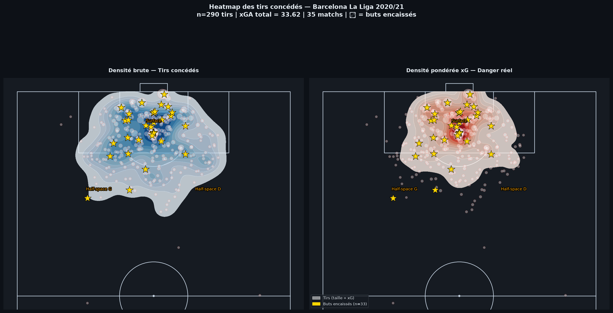
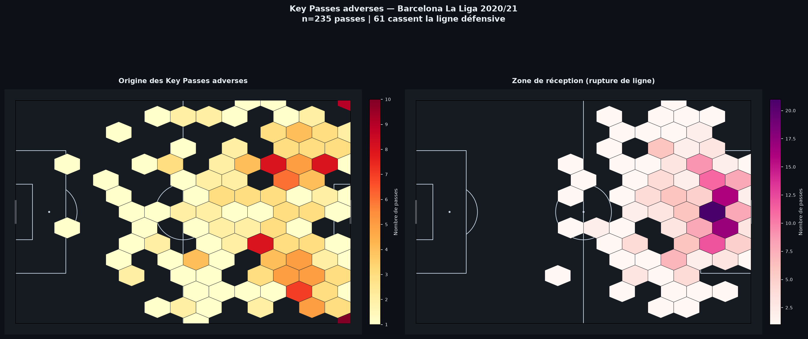
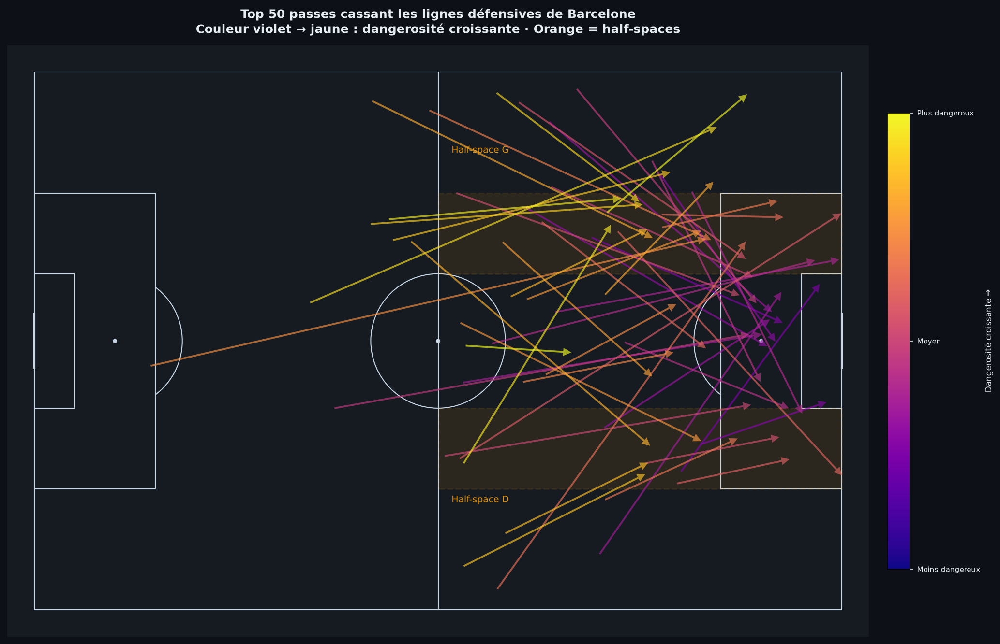
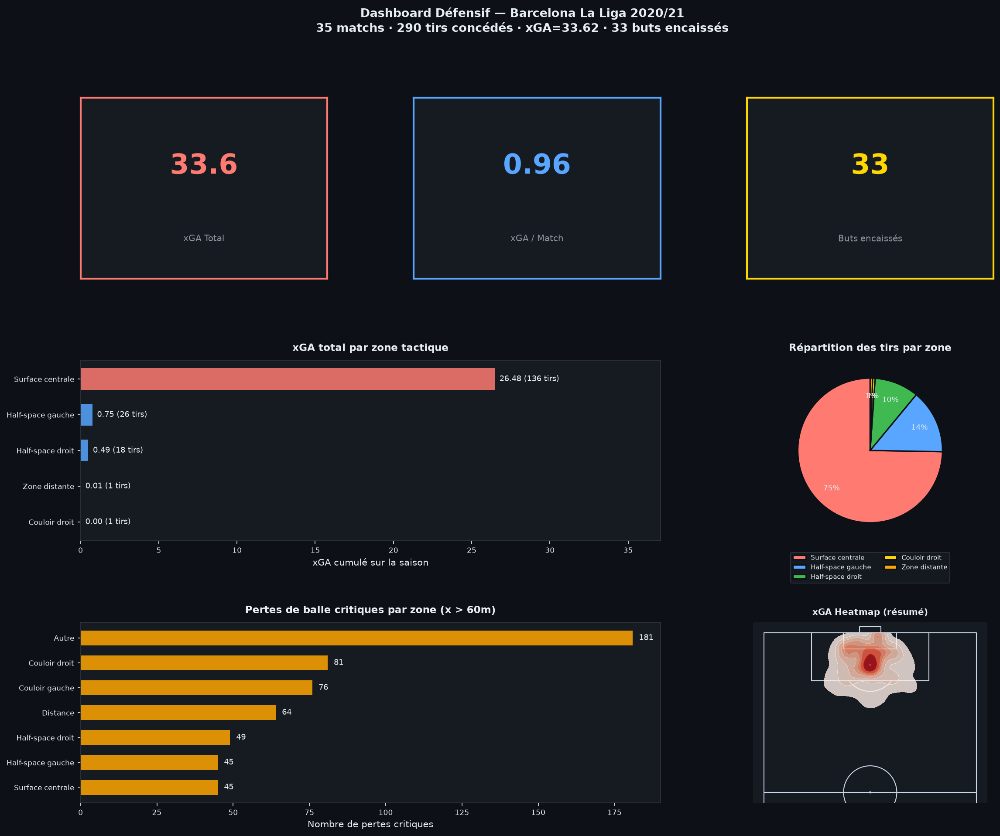
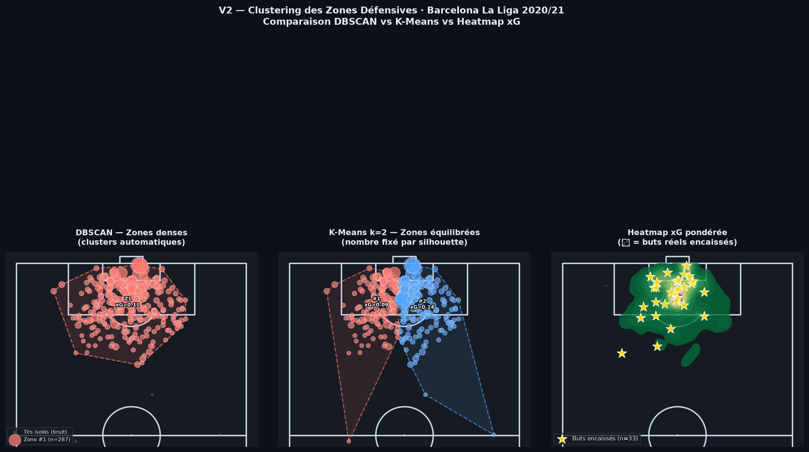
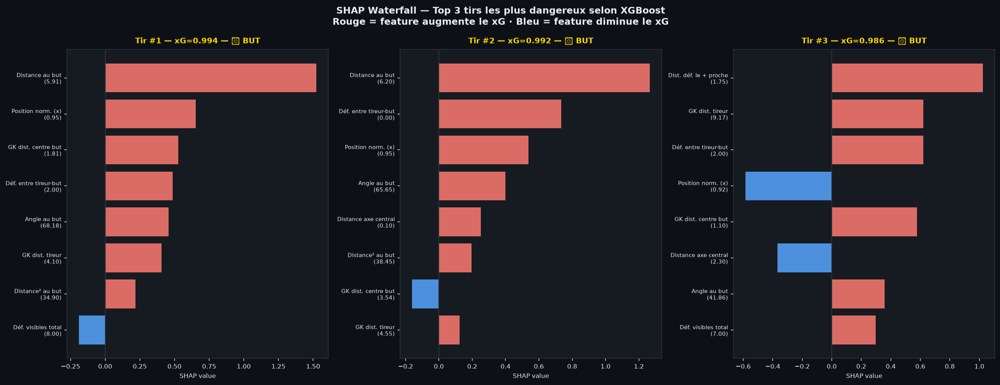

Spatial · Machine Learning · Freeze Frame · API Live
Un pipeline analytique complet construit depuis les données événementielles StatsBomb. Sélectionnez n'importe quelle équipe et saison pour obtenir instantanément un rapport défensif avec forces, faiblesses et recommandations tactiques.
De l'ingestion brute au rapport PDF auto-généré. Chaque notebook est documenté, testé et reproductible sur n'importe quelle équipe StatsBomb.
6 zones (surface, half-spaces, couloirs). xGA, PPDA, Line-Break Rate, pertes critiques avec tests Mann-Whitney.
6 figures analytiques complémentaires. Heatmap KDE pondérée xG, hexbin key passes, arrow map progression.
9 features spatiales. AUC 0.76, calibration parfaite (xG total = buts réels). Importance par permutation.
Zones auto-détectées sans a priori tactique. Score silhouette pour k optimal. Enveloppes convexes.
7 features spatiales extraites par tir. Produit vectoriel (cône de tir) + loi des cosinus (angle).
Comparaison LogReg vs XGBoost sur 16 features. TreeExplainer SHAP, waterfall plots.
Sélectionnez une compétition, une saison et une équipe. Le rapport défensif est généré depuis les données StatsBomb réelles (ou via un modèle proxy pour la démo).






Un document "Print-Ready" de 7 pages, généré en HTML/CSS, condensant l'intégralité du pipeline analytique : du résumé exécutif aux visualisations de failles (DBSCAN/K-Means), jusqu'aux recommandations tactiques actionnables.
Formation universitaire en méthodes informatiques appliquées à la gestion. Poste actuel de Business Analyst orienté traitement de données et conformité. Ce portfolio illustre le transfert de cette rigueur analytique vers l'analyse de données sportives professionnelle.
Intégrer le staff analytique d'un club professionnel ou rejoindre une cellule de recrutement data-driven. Ce projet démontre la capacité à produire des insights actionnables depuis des données complexes.
Chaque KPI est statistiquement validé (Mann-Whitney p-value) avant d'être présenté. La rigueur du Business Analyst appliquée au football — pas de corrélation sans test.
L'analyse est ancrée dans une vraie compréhension du jeu : half-spaces, PPDA, bloc défensif, transitions. Les outputs sont lisibles directement par un coach.